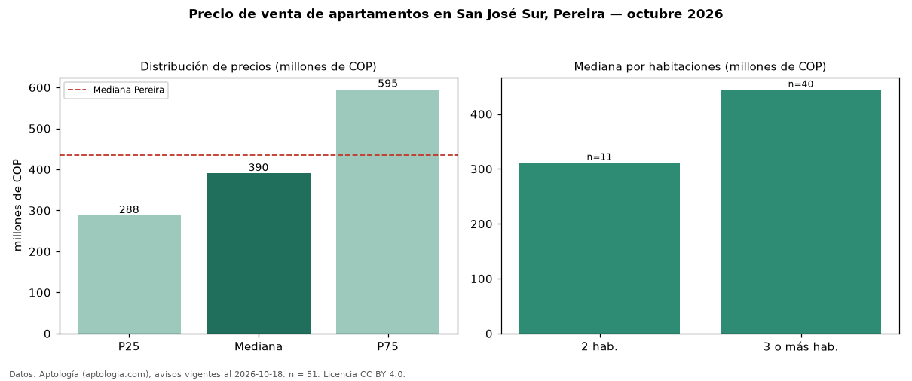

Precio de venta de apartamentos en San José Sur, Pereira — octubre 2026
Con 51 avisos vigentes, el precio mediano de apartamentos en venta en San José Sur, Pereira es COP 390 millones. Frente a la mediana de Pereira para apartamentos (COP 435 millones), queda 10 % por debajo. Por metro cuadrado, la mediana es COP 4,86 millones/m² (n = 49 avisos con área), 12 % por debajo de Pereira (COP 5,50 millones/m²). Con el precio por m² de arriendo del mismo segmento (COP 36.000/m² al mes), la rentabilidad bruta implícita es 8,9 % anual (aproximación con medianas de ofertas distintas). El área mediana anunciada es 90 m². El segmento con más oferta es el de 3 o más habitaciones (40 avisos, mediana COP 445 millones); pasar de 2 habitaciones a 3 o más habitaciones cambia la mediana +43 %. La administración mediana declarada es COP 450.000 al mes (n = 31). La mitad central de los avisos va de COP 288 millones a COP 595 millones (razón 2,1), una dispersión alta. Datos: Aptología (aptologia.com), CC BY 4.0 — https://www.aptologia.com/venta/pereira/san-jose-sur. Archivos: PDF, CSV con las cifras y gráfica PNG.

| Avisos únicos | 51 |
|---|---|
| Percentil 25 | COP 287.500.000 |
| Mediana | COP 390.000.000 |
| Percentil 75 | COP 595.000.000 |
| Mediana por m² | COP 4.857.142 |
Fuente: avisos vigentes de portales inmobiliarios recopilados por Aptología, deduplicados (mínimo 30 avisos únicos por celda). Precios pedidos, no cerrados. Fecha: 2026-10-18.